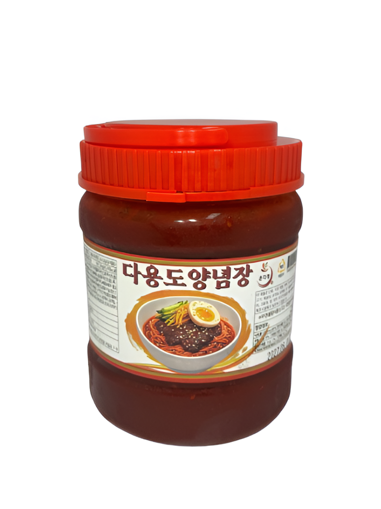
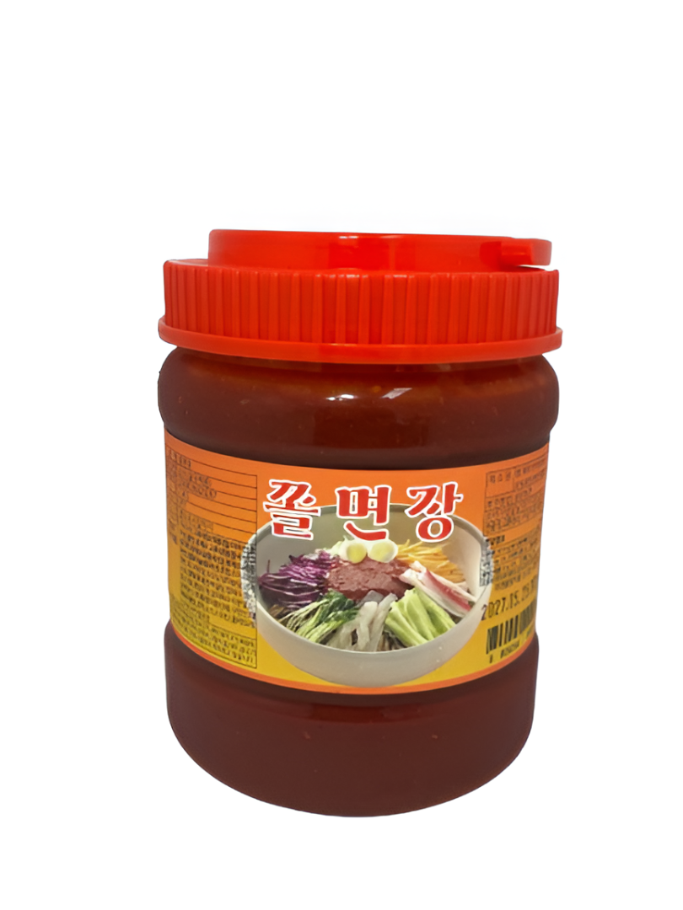

온다정의 정성을 담은 다양한 제품을 소개합니다.
새콤달콤한 특제 양념으로 비빔냉면 및 다양한 면요리에 적합합니다.

다양한 비빔, 무침류에 간편하게 사용할 수 있는 양념장입니다.

입맛 돋우는 매콤함과 상큼함이 조화를 이루는 비법 쫄면 양념장입니다.
디저트부터 다양한 요리 토핑까지 다채롭게 활용할 수 있는 고소한 콩가루입니다.
상품설명이 들어갈 자리입니다.